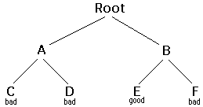

Copyright ©2002 by David Matuszek
Backtracking is a form of recursion.
The usual scenario is that you are faced with a number of options, and you must
choose one of these.
After you make your choice you will get a new set of
options; just what set of options you get depends on what choice you made.
This procedure is repeated over and over until you reach a final state.
If you made a good sequence of choices, your 12th final state is a goal state;
if you didn't, it isn't.
Conceptually, you start at the root of a tree; the tree probably has
some good leaves and some bad leaves, though it may be that the leaves are all
good or all bad. You want to get to a good leaf. At each node, beginning with
the root, you choose one of its children to move to, and you keep this up
until you get to a leaf.
Suppose you get to a bad leaf. You can backtrack to continue the search for a good leaf by revoking your most recent choice, and trying out the next option in that set of options. If you run out of options, revoke the choice that got you here, and try another choice at that node. If you end up at the root with no options left, there are no good leaves to be found.
This needs an Example:
In this example we drew a picture of a tree. The tree is an abstract model of the possible sequences of choices we could make. There is also a data structure called a tree, but usually we don't have a data structure to tell us what choices we have. (If we do have an actual tree data structure, backtracking on it is called depth-first tree searching.)
Here is the algorithm (in pseudocode) for doing backtracking from a given node n:
boolean solve(Node n) {
if n is a leaf node {
if the leaf is a goal node, return true
else return false
} else {
for each child c of n {
if solve(c) succeeds, return true
}
return false
}
}
int main ()
{
int a,b;
int sum = a+ b;
}
| 2 by 3 map | 3 by 3 map | 3 by 4 map | ||
|---|---|---|---|---|
| Method 1: | 0 ms | 60 ms | 940 ms | |
| Method 2: | 100 ms | 20 ms | test failed | |
| Heading 1 | Heading 2 | Heading 3 |
|---|---|---|
| subhead3 |